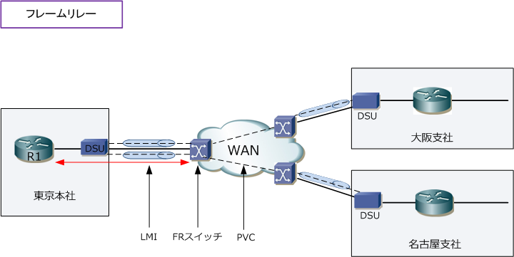
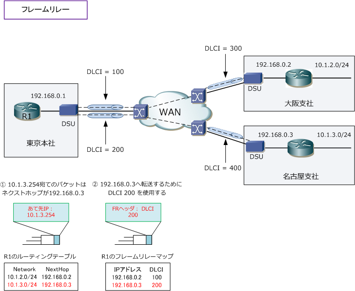
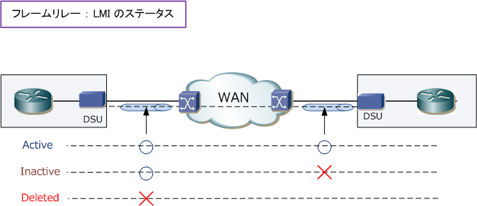
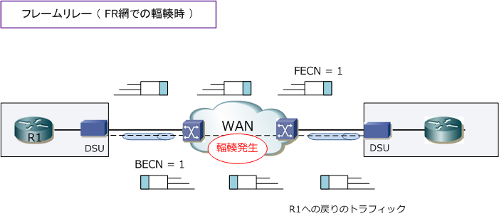
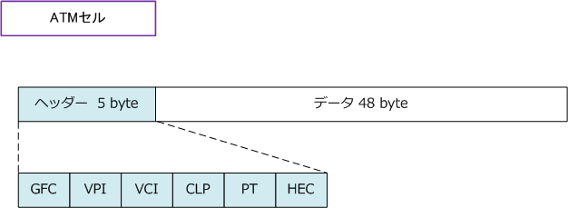
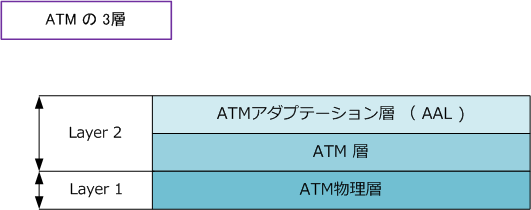
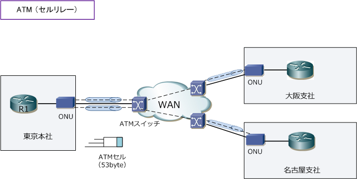

WAN - Frame-Relay / ATM
WANの回線タイプ - パケット交換
以降で解説するフレームリレー、ATM、IP-VPN、広域イーサネットの回線タイプは「パケット交換」です。 パケット交換の回線タイプでは、データを細かい単位（パケット）に分割してキャリア網のネットワークへ データ伝送する方式です。各パケットには宛先となる識別情報を付加することで、相手先(通信先)を特定し 拠点間の通信をすることができます。パケット交換の回線タイプでは、通信中に回線を占有しないことから 理論上キャリア網内での輻輳（ トラフィックが集中して混雑している状態 ）が発生する可能性があります。
しかし、現在主流のIP-VPNと広域イーサネットでは非常に広帯域なバックボーンインフラであることから 実質的にアクセス回線での契約帯域が保証されます。なお、回線交換のコールセットアップは発生しません。
WANの回線サービス - フレームリレー
フレームリレーは、前身のX.25というWANサービスからエラー訂正機能を取り除いたWANサービスです。 フレームリレーは、エラー訂正、確認応答、再送制御等を行わないため高速データ伝送を実現しています。 フレームリレーは、1つの物理回線上で複数の仮想回線を用意して複数の拠点との通信を可能にしています。
仮想回線はVC（Virtual Circuit）と言いますが、VCにはPVC（相手先固定接続）とSVC（相手先選択接続） の2つがあります。PVCは契約時に定義した通信相手と固定接続するのに対して、SVCは接続を動的に確立 して通信終了時に切断する方式です。SVCは日本のキャリアでサポートされておらずPVCが主流の方式です。 ※ 現在フレームリレーをWANとして採用する企業はほぼなく、多くの企業はフレームリレーからIP-VPN等に切り替えています。

以下はフレームリレーを理解する上で重要な用語です。以下の内容は全て覚えるようにしましょう。
| FRの用語 | 説明 |
|---|---|
| PVC | Permanent Virtual Circuit。契約時に定義した通信相手と固定接続する仮想回線。 |
| SVC | Switched Virtual Circuit。接続を動的に確立して、通信終了時に切断する一時的な仮想回線。 |
| DLCI | データリンク接続識別子。VC(仮想回線）を識別するもので、フレームリレーヘッダの中にある情報。 DLCI番号はキャリアにより割り当てられ、ルータとローカルのFRスイッチ間でのみ意味を持つ番号。 したがって接続先の拠点とDLCI番号が同じでも問題ありません。このDLCI番号と宛先IPアドレスが 関連付け（フレームリレーマップ）されているので送出されるパケットは使用するDLCI番号が分かる。 |
| Inverse ARP | ローカルのDLCI番号と宛先ルータのIPアドレスのフレームリレーマップを動的に生成するプロトコル。 |
| LMI | Local Management Interface。ユーザのルータとキャリアのFRスイッチ間のシグナリング。LMIにより ルータとFRスイッチ間のステータスを保持している。LMIタイプはcisco、ansi、q933aの3つがある。 |
| ローカル アクセスレート |
ルータとFRスイッチ間のアクセス回線の速度 |
| CIR | Committed information Rate。契約時に定義するフレームリレー網内におけるPVCごとの保証速度。 |
| FECN | Forward Explicit Congestion Nortification。フレームリレー網内の輻輳状態を宛先に知らせるため のフレームリレーヘッダのフィールド。輻輳を検知すると、FRスイッチはFECNビット1にして送信する。 |
| BECN | Backward Explicit Congestion Nortification。フレームリレー網内の輻輳状態を送信元に知らせる ためのフレームリレーヘッダのフィールド。輻輳を検知すると、FRスイッチはBECNビット1にして送信。 |
フレームリレーの用語を理解したところで下図を見てみましょう。下図では、東京本社から名古屋支社の 10.1.3.0/24のネットワークにパケットを送信している様子です。東京本社のR1に着信したパケットに対し R1のルータは宛先IPアドレスを確認し、宛先ネットワークがルーティングテーブルに存在するかどうかを 確認します。宛先ネットワークが存在して、ネクストホップアドレスが192.168.0.3であると分かります。
次にフレームリレーマップを確認すると192.168.0.3にマップされているDLCI番号が200だと分かるので R1からパケットが送出される際にはDLCI番号の200を使用して、フレームが転送されていきます。この DLCI=200を使用したフレームがDLCI=400に転送される設定は、キャリアのFRスイッチで行っています。

次にLMIのステータスを見ます。LMIのステータスにはActive、Inactive、Deletedの3つがあります。

| LMIのステータス | 説明 |
|---|---|
| Active | PVCが有効であり正常に通信できる状態。 |
| Inactive | ローカルのルータとFRスイッチ間の接続には問題ないが、接続先のルータとFRスイッチ間に問題が発生。 |
| Deleted | ローカルのルータとFRスイッチ間の接続に問題が発生。PVCの設定がない、LMIを受信していないなど。 |
最後にフレームリレー網内で輻輳が発生した時のFECNとBECNの輻輳の通知の様子を下図で見てみましょう。

WANの回線サービス - ATM（セルリレー ）
ATM（Asynchronous Transfer Mode）の技術を使用したセルリレーのWANサービスは、フレームリレー 同様に１つの物理回線を共有して複数の仮想回線を生成することができます。ATMはフレームリレー同様、 現在、企業ネットワークのWANサービスとして、ほぼ使用されておりません。ATMでは53バイトの固定長 のデータであるセルを基本的な通信の単位としています。53バイトの固定長のセルは5バイトのヘッダーと 48バイトのデータ（ペイロード）で構成されます。VPIとVCIにより仮想回線の識別を行うことができます。

| ATMセルのヘッダー | ||
|---|---|---|
| ヘッダー | ビット | 説明 |
| GFC | 4bit | 汎用フロー制御。１つのATMインターフェースを共有する複数のステーションの識別 |
| VPI | 8bit | 仮想パス識別子。VCIと組み合わせて使用され、ATM網で宛先に到達するまでのセルの次の宛先を識別。 |
| VCI | 16bit | 仮想チャネル識別子。VPIと組み合わせて使用され、ATM網で宛先に到達するまでのセルの宛先を識別。 |
| PT | 3bit | ペイロードタイプ。セルに格納しているデータの種類や輻輳の有無を示す。 |
| CLP | 1bit | 輻輳損失プライオリティ。強度の輻輳時に、セルを廃棄するかどうかを示す。 |
| HEC | 8bit | ヘッダーエラー制御。ヘッダーのエラー検出を行う。 |
ATMはレイヤ2プロトコルですが正確にはATMレイヤーにはLayer1からLayer2の間で3層で構成されています。 AALでは上位層から受け取るデータを48バイトのATMペイロードにセグメント化、及び再構築する機能があり ATM層では上位層のAALから48バイトのデータを受け取り、5バイトのヘッダーを付加してATMセルを生成し ATM物理層ではATMセルをSDH/SONETの物理規格上で伝送できるようにしています。以上がATMの3層です。

AALには「AAL1～AAL5」までの4種類が規定されており、現在主に使用されているAAL5となります。
| AALの種類 | 説明 |
|---|---|
| AAL1 | コネクション型。ビデオなどの大容量の動画配信向けの規格。 |
| AAL2 | コネクション型。低速な音声符号向けの規格。 |
| AAL3/4 | コネクションレス型。データ通信用向けの規格。 |
| AAL5 | コネクションレス型。AAL3/4を簡略化した規格。広域LANとして以下が広く用いられている。 ・ Ethernet over ATM ・ IP over ATM ・PPPoA |
セルリレーのWANサービスでは、DCEにATM-ONUまたはATM-DSUを使用します。現在、ATMは下図の ようなWANで利用されることは少ないですが、キャリアのバックボーンとして使用するケースもあります。
